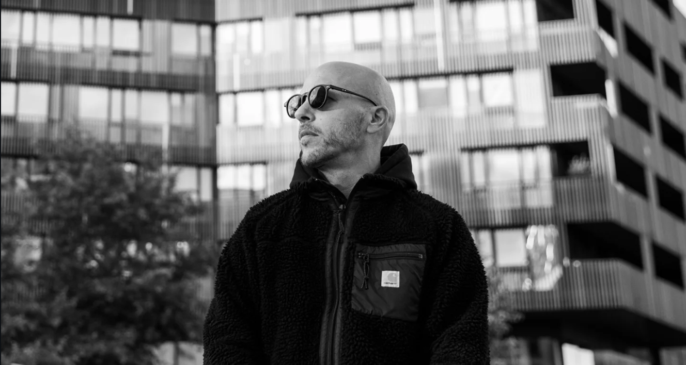

Dropout Marsh · Founder of Contre Jour Records, Montpellier
An artist who takes his time
Some artists show up fast, burn bright, then disappear. Others build slowly, methodically, until everything holds together. Dropout Marsh clearly belongs to the second category. Twenty years spread across hip-hop beatmaking, film composition and IDM explorations, before circling back to the club through the doors of UK Garage. It's not the obvious path, which makes the result that much more convincing.
As founder of Montpellier-based Contre Jour Records, he didn't just make music. He built an ecosystem, an editorial vision, a coherent sonic space. That kind of artist commands a different kind of listening.
Five tracks. Not one too many. Dropout Marsh has never been into filler, and What Remains makes it clear that every second is intentional.
What Remains — what the night leaves behind
The EP hits with immediate tension. Basslines shift and stagger, never quite settling. Vocal textures arrive in fragments, ghostly and pitched-up in the classic UK Garage tradition but filtered through a contemporary sensibility. It's Speed Garage at its core, a production that moves between rawness and luminosity with real control.
What sets What Remains apart is its balance. On one side, the warm, summery quality of classic 2-step, those euphoric piano runs that belong to this genre and this genre only. On the other, something darker and more melancholic, a post-rave feeling that reminds you every night eventually ends. The tension between the two is precisely where the EP lives and breathes.
You hear echoes of Disclosure's harmonic sensibility, dub textures pressed against the rhythm like a second skin. But Dropout Marsh isn't quoting anyone. He's absorbed his influences and produced something that's entirely his own.
France didn't ask for permission
What's striking about What Remains is where it comes from. Not London. Not Paris. A city in the South of France, an independent label, distributed through Underscope. UK Garage no longer needs a Channel crossing to feel authentic.
Dropout Marsh proves it without making a scene about it. The sonic mastery is there, and so is the cultural fluency. The EP works as a dancefloor weapon and as something more private, those quieter hours after a rave when everything winds down but certain frequencies keep looping in your head. Music that leaves a mark. Which, after all, is exactly what the title says.
A name to keep close. A label worth watching.